ROOF HEADLINING (w/ Sliding Roof) > REMOVAL |
| 1. DISCONNECT CABLE FROM NEGATIVE BATTERY TERMINAL |
| 2. REMOVE REAR NO. 2 SEAT ASSEMBLY LH (except Face to Face Seat Type) |
Remove the rear No. 2 seat assembly LH (Click here).
| 3. REMOVE REAR NO. 2 SEAT ASSEMBLY RH (except Face to Face Seat Type) |
| 4. REMOVE REAR NO. 2 SEAT ASSEMBLY LH (for Face to Face Seat Type) |
Remove the rear No. 2 seat assembly LH (Click here).
| 5. REMOVE REAR NO. 2 SEAT ASSEMBLY RH (for Face to Face Seat Type) |
| 6. REMOVE FRONT DOOR SCUFF PLATE LH |
 |
Detach the 7 claws and 4 clips, and remove the scuff plate.
| 7. REMOVE FRONT DOOR SCUFF PLATE RH |
| 8. REMOVE REAR STEP COVER |
 |
Detach the 2 claws and remove the step cover.
| 9. REMOVE REAR DOOR SCUFF PLATE LH |
 |
Remove the screw.
Detach the 3 claws and 4 clips, and remove the scuff plate.
| 10. REMOVE REAR DOOR SCUFF PLATE RH |
| 11. REMOVE REAR FLOOR MAT REAR SUPPORT PLATE |
 |
Detach the 6 clips and remove the support plate.
| 12. REMOVE FRONT ASSIST GRIP SUB-ASSEMBLY |
 |
Detach the 4 claws and remove the 2 assist grip plugs.
 |
Remove the 2 bolts.
Detach the 2 claws and remove the front assist grip.
| 13. REMOVE FRONT PILLAR GARNISH LH |
 |
Detach the clip 3 guides, and remove the front pillar garnish.
for 9 Speakers:
Disconnect the speaker connector and then remove the front pillar garnish.
 |
Protect the curtain shield airbag.
Thoroughly cover the airbag with a cloth or nylon sheet and fix the ends of the cover with adhesive tape, as shown in the illustration.
| 14. REMOVE FRONT PILLAR GARNISH RH |
| 15. REMOVE CENTER PILLAR GARNISH COVER LH |
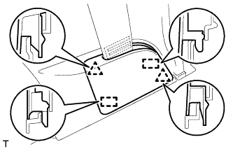 |
Detach the 2 clips and 2 guides, and remove the cover.
| 16. REMOVE CENTER PILLAR GARNISH COVER RH |
| 17. REMOVE CENTER LOWER PILLAR GARNISH LH |
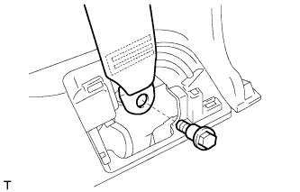 |
Remove the bolt and seat belt anchor.
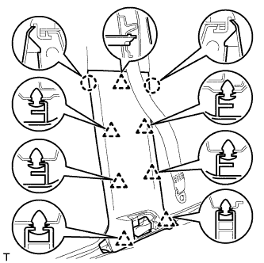 |
Detach the 2 claws and 7 clips, and remove the center lower pillar garnish.
| 18. REMOVE CENTER LOWER PILLAR GARNISH RH |
| 19. REMOVE REAR ASSIST GRIP ASSEMBLY |
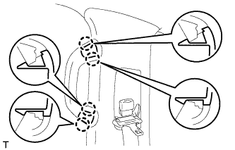 |
Detach the 4 claws and remove the 2 assist grip plugs.
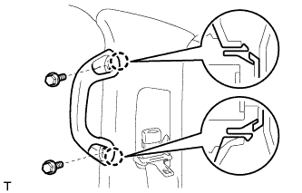 |
Remove the 2 bolts.
Detach the 2 claws and remove the rear assist grip.
| 20. REMOVE CENTER PILLAR GARNISH LH |
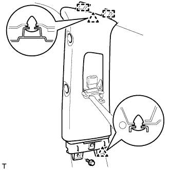 |
Remove the bolt.
Detach the 2 clips and 2 guides.
Pass the seat belt anchor through the center pillar garnish, and remove the center pillar garnish.
| 21. REMOVE CENTER PILLAR GARNISH RH |
| 22. REMOVE REAR SEAT COVER CAP (w/ Rear No. 2 Seat, except Face to Face Seat Type) |
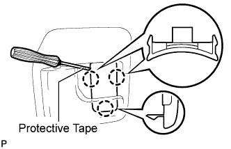 |
Using a screwdriver, detach the 3 claws and remove the rear seat cover cap.
| 23. REMOVE FRONT QUARTER TRIM PANEL ASSEMBLY LH |
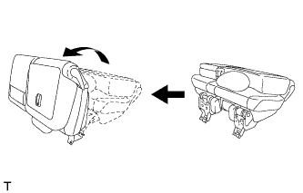 |
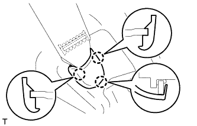 |
Detach the 3 claws and remove the cover.
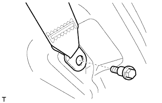 |
Remove the bolt and rear No. 1 seat belt anchor.
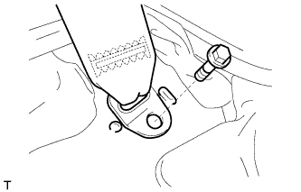 |
w/ Rear No. 2 Seat, except Face to Face Seat Type:
Remove the bolt and rear No. 2 seat belt anchor.
w/ Rear No. 2 Seat, except Face to Face Seat Type:
Remove the clip and bolt.
Detach the 18 clips and 2 claws.
w/o Rear Air Conditioning System:
Disconnect the rear seat lock control lever cable and then remove the quarter trim panel.
w/ Rear Air Conditioning System:
Disconnect the thermistor connector and rear seat lock control lever cable, and then remove the quarter trim panel.
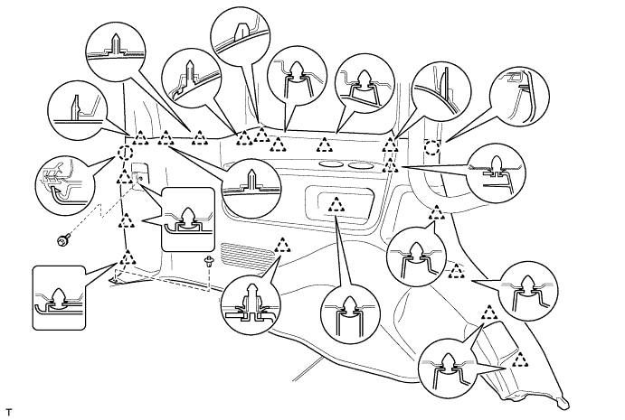
w/o Rear No. 2 Seat or w/ Rear No. 2 Seat, for Face to Face Seat Type:
Remove the clip.
Detach the 18 clips and 2 claws, and remove the quarter trim panel.
| 24. REMOVE FRONT QUARTER TRIM PANEL ASSEMBLY RH |
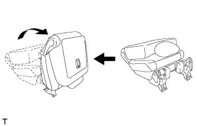 |
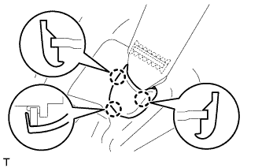 |
Detach the 3 claws and remove the cover.
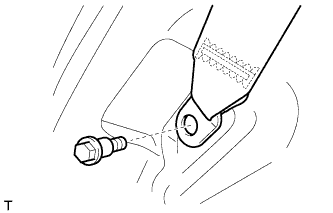 |
Remove the bolt and rear No. 1 seat belt anchor.
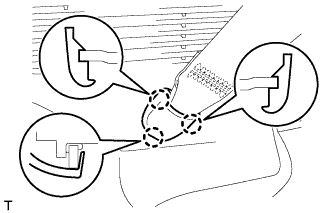 |
w/ Rear No. 2 Seat, except Face to Face Seat Type:
Detach the 3 claws and remove the cover.
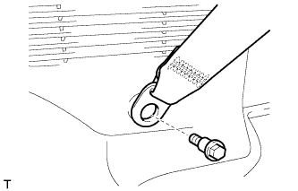 |
Remove the bolt and rear No. 2 seat belt anchor.
w/ Rear No. 2 Seat, except Face to Face Seat Type:
Remove the clip and bolt.
Detach the 16 clips and 2 claws.
w/o Rear Air Conditioning System:
Disconnect the rear seat lock control lever cable and then remove the quarter trim panel.
w/ Rear Air Conditioning System:
Disconnect the thermistor connector and rear seat lock control lever cable, and then remove the quarter trim panel.
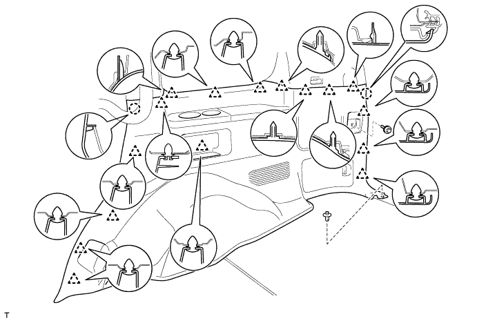
w/o Rear No. 2 Seat or w/ Rear No. 2 Seat, for Face to Face Seat Type:
Remove the clip.
Detach the 16 clips and 2 claws, and remove the quarter trim panel.
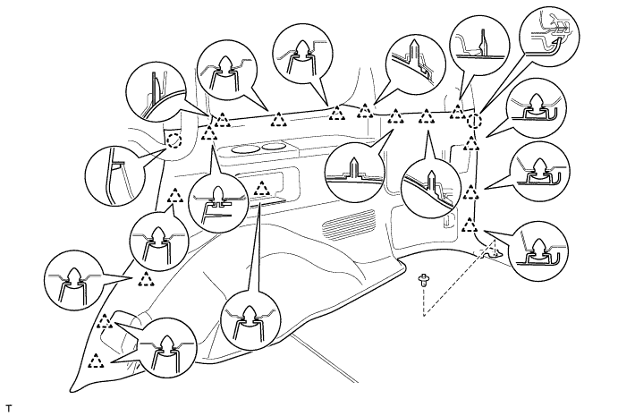
| 25. REMOVE REAR FRONT QUARTER TRIM GARNISH LH |
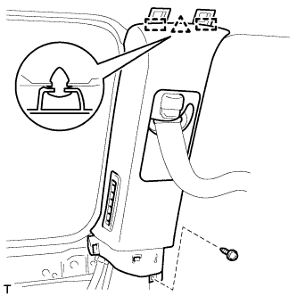 |
Remove the screw.
Detach the clip and 2 guides.
Pass the seat belt anchor through the quarter trim garnish, and remove the quarter trim garnish.
| 26. REMOVE REAR FRONT QUARTER TRIM GARNISH RH |
| 27. REMOVE REAR UPPER PILLAR GARNISH LH |
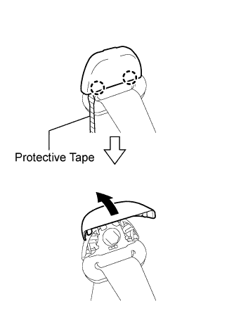 |
w/ Rear No. 2 Seat, except Face to Face Seat Type
Using a screwdriver, detach the 2 claws and open the seat belt shoulder anchor cover.
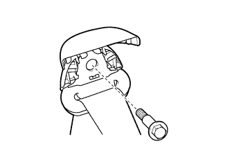 |
Remove the bolt and seat belt shoulder anchor.
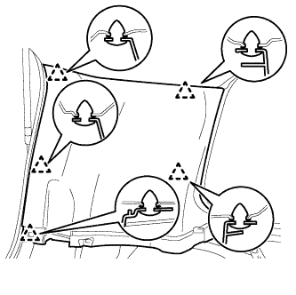 |
Detach the 5 clips and remove the rear upper pillar garnish.
| 28. REMOVE REAR UPPER PILLAR GARNISH RH |
| 29. REMOVE MAP LIGHT ASSEMBLY |
Using a screwdriver, detach the 2 claws and open the 2 covers.
Remove the 2 screws.
Detach the 2 clips and 2 guides.
Disconnect the connector and then remove the map light.
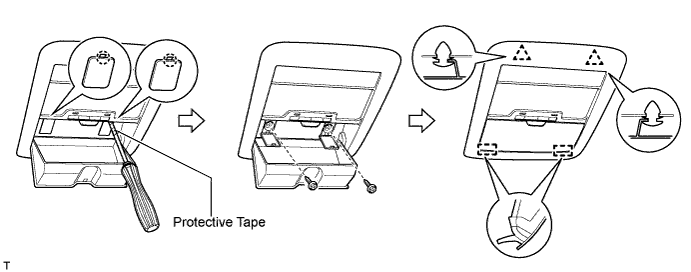
| 30. REMOVE NO. 1 ROOM LIGHT ASSEMBLY |
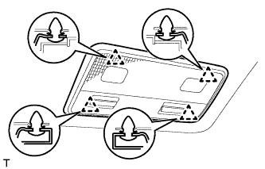 |
Detach the 4 clips.
Disconnect the connector and then remove the room light.
| 31. REMOVE NO. 2 ROOM LIGHT ASSEMBLY |
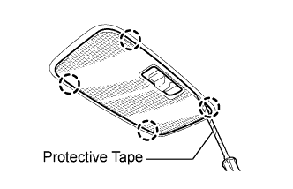 |
Using a screwdriver, detach the 4 claws and remove the room light lens.
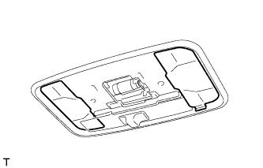 |
Remove the 2 covers.
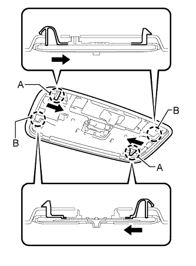 |
Using a screwdriver, push the 2 levers in the direction of the arrows in the illustration, and detach the 2 claws labeled A.
Detach the 2 claws labeled B.
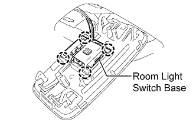 |
Detach the 4 claws and remove the room light from the room light switch base.
| 32. REMOVE VISOR BRACKET COVER |
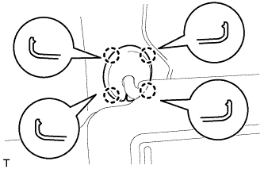 |
Detach the 4 claws and remove the visor bracket cover.
| 33. REMOVE VISOR ASSEMBLY LH |
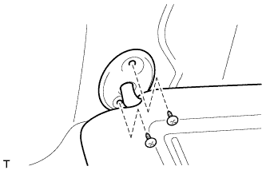 |
Remove the 2 screws and visor.
| 34. REMOVE VISOR ASSEMBLY RH |
| 35. REMOVE VISOR HOLDER |
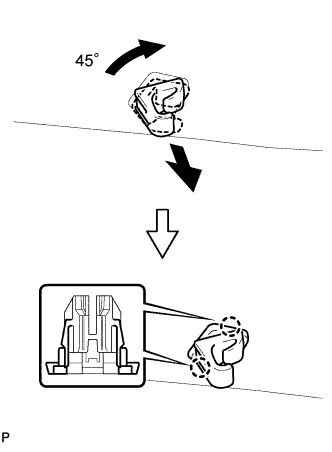 |
Turn the visor holder approximately 45° and pull it out as shown in the illustration.
Detach the 2 claws and remove the visor holder.
| 36. REMOVE CENTER VISOR ASSEMBLY LH (w/ Sub Visor) |
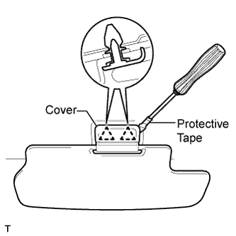 |
Using a screwdriver, pry off the cover to detach the 2 clips and remove the center visor.
| 37. REMOVE CENTER VISOR ASSEMBLY RH (w/ Sub Visor) |
| 38. REMOVE INNER REAR VIEW MIRROR STAY HOLDER COVER (w/ EC Mirror) |
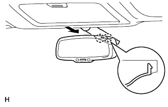 |
Detach the 2 claws and remove the cover as shown in the illustration.
| 39. REMOVE RAIN SENSOR COVER (w/ Rain Sensor) |
Slide the No. 2 cover in the direction of the arrow labeled (1).
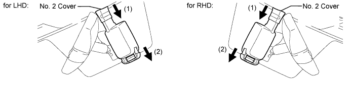
Pull the stopper in the direction of the arrow labeled (2) to remove the No. 2 cover.
| 40. REMOVE SEAT BELT ANCHOR COVER (for 3 Person Seat Type Rear No. 2 Seat) |
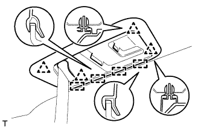 |
Detach the 4 clips and 4 guides, and remove the seat belt anchor cover.
| 41. REMOVE ASSIST GRIP ASSEMBLY |
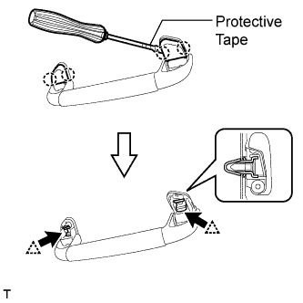 |
Using a screwdriver, detach the 4 claws and remove the 2 assist grip covers.
Detach the 2 clips and remove the assist grip.
Remove the 2 clips from the vehicle body.
| 42. REMOVE NO. 2 ASSIST GRIP ASSEMBLY LH |
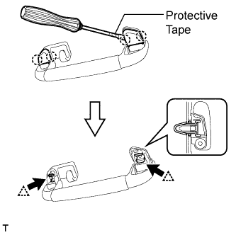 |
w/ Rear No. 2 Seat, except Face to Face Seat Type or w/o Rear No. 2 Seat:
Remove the No. 2 assist grip assembly.
Using a screwdriver, detach the 4 claws and remove the 2 assist grip covers.
Detach the 2 clips and remove the assist grip.
Remove the 2 clips from the vehicle body.
w/ Rear No. 2 Seat, for Face to Face Seat Type:
Remove the No. 2 assist grip assembly.
Using a screwdriver, detach the 4 claws and remove the 2 assist grip covers.
Detach the 2 clips and remove the assist grip.
Remove the 2 clips from the vehicle body.
| 43. REMOVE NO. 2 ASSIST GRIP ASSEMBLY RH |
| 44. REMOVE 3RD SEAT ASSIST GRIP ASSEMBLY (w/ Rear No. 2 Seat, except Face to Face Seat Type) |
Using a screwdriver, detach the 4 claws and remove the 2 assist grip covers.
Detach the 2 clips and remove the assist grip.
Remove the 2 clips from the vehicle body.
| 45. REMOVE ROOF HEADLINING ASSEMBLY |
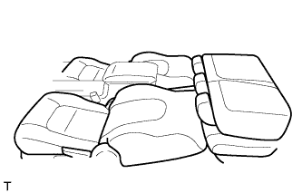 |
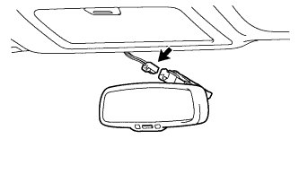 |
w/ EC Mirror:
Disconnect the inner mirror connector.
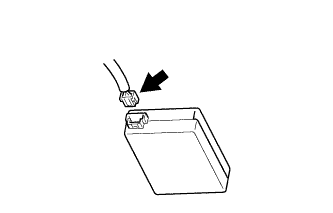 |
w/ Rain Sensor:
Disconnect the rain sensor connector.
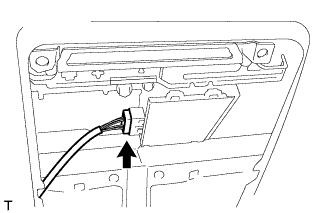 |
Disconnect the drive gear connector.
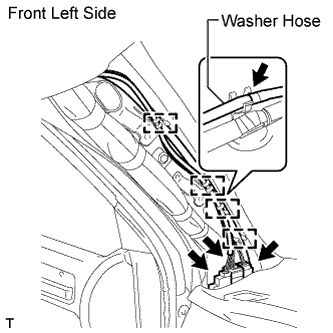 |
Disconnect the 3 roof wire connectors and washer hose.
Detach the 4 clamps.
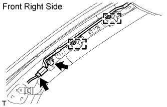 |
Remove the bolt.
Disconnect the antenna cord connector and detach the 2 clamps.
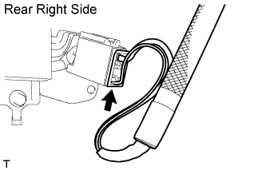 |
Disconnect the antenna cord connector.
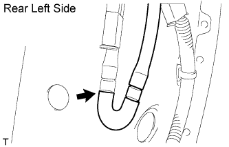 |
Disconnect the washer hose.
for 3 Person Seat Type Rear No. 2 Seat:
Detach the 12 claws, 2 clips, 2 guides and 16 fasteners.
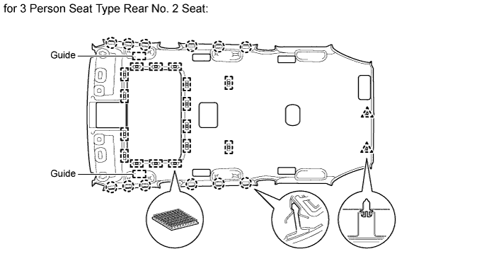
except 3 Person Seat Type Rear No. 2 Seat:
Detach the 12 claws, 3 clips, 2 guides and 16 fasteners.
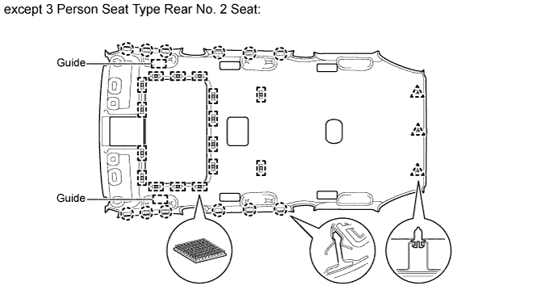
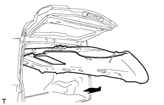 |
Remove the headlining from the rear of the vehicle as shown in the illustration.
| 46. REMOVE FRONT ROOF SIDE RAIL GARNISH LH |
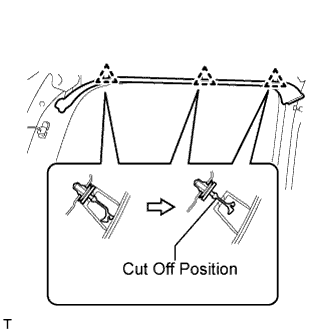 |
Detach the 3 clips.
Cut off the 3 clips and remove the roof side rail garnish.
Remove 3 clips from the vehicle body.
| 47. REMOVE FRONT ROOF SIDE RAIL GARNISH RH |
| 48. REMOVE FRONT DOOR OPENING TRIM WEATHERSTRIP LH |
Remove the front door opening trim weatherstrip.
| 49. REMOVE FRONT DOOR OPENING TRIM WEATHERSTRIP RH |
| 50. REMOVE REAR DOOR OPENING TRIM WEATHERSTRIP LH |
Remove the rear door opening trim weatherstrip.
| 51. REMOVE REAR DOOR OPENING TRIM WEATHERSTRIP RH |
| 52. REMOVE BACK DOOR WEATHERSTRIP |
Remove the back door weatherstrip.
| 53. REMOVE FRONT DOOR SCUFF PLATE OUTSIDE LH |
Put protective tape around the front door scuff plate outside.
Detach the 4 clips and remove the front door scuff plate outside.
| 54. REMOVE FRONT DOOR SCUFF PLATE OUTSIDE RH |
| 55. REMOVE REAR DOOR SCUFF PLATE OUTSIDE LH |
Put protective tape around the rear door scuff plate outside.
Detach the 3 clips and remove the rear door scuff plate outside.
| 56. REMOVE REAR DOOR SCUFF PLATE OUTSIDE RH |
| 57. REMOVE FRONT SHOULDER BELT ANCHOR PLATE SUB-ASSEMBLY LH |
Detach the 6 claws of the plate, and slide the plate in the direction of the arrow to remove it.
| 58. REMOVE FRONT SHOULDER BELT ANCHOR PLATE SUB-ASSEMBLY RH |
| 59. REMOVE REAR SHOULDER BELT ANCHOR PLATE SUB-ASSEMBLY LH |
Detach the 6 claws and remove the plate.
| 60. REMOVE REAR SHOULDER BELT ANCHOR PLATE SUB-ASSEMBLY RH |
| 61. REMOVE ROOF SIDE INNER GARNISH COVER LH (w/ Rear No. 2 Seat, except Face to Face Seat Type) |
Detach the 7 claws and remove the cover.
| 62. REMOVE ROOF SIDE INNER GARNISH COVER RH (w/ Rear No. 2 Seat, except Face to Face Seat Type) |
| 63. REMOVE REAR SEAT SHOULDER BELT HANGER (w/ Rear No. 2 Seat, except Face to Face Seat Type) |
Remove the 2 spring nuts and hanger.
| 64. REMOVE REAR NO. 2 SEAT SHOULDER BELT HANGER LH |
Remove the 2 spring nuts and hanger.
| 65. REMOVE REAR NO. 2 SEAT SHOULDER BELT HANGER RH |
| 66. REMOVE QUARTER TRIM COVER SUB-ASSEMBLY LH |
w/ Rear Heater:
Remove the 8 screws and duct.
Remove the 7 screws.
Detach the 4 claws and remove the quarter trim cover.
| 67. REMOVE QUARTER TRIM COVER SUB-ASSEMBLY RH |
Remove the 7 screws.
Detach the 4 claws and remove the quarter trim cover.
| 68. REMOVE NO. 2 CUP HOLDER |
Remove the 5 screws.
Detach the 3 claws and remove the cup holder.
| 69. REMOVE NO. 1 CUP HOLDER |
Remove the 5 screws.
Detach the 3 claws and remove the cup holder.
| 70. REMOVE NO. 1 SIDE TRIM BASE COVER LH (w/ Rear Heater) |
Detach the 4 claws and remove the cover.
| 71. REMOVE NO. 1 SIDE TRIM BASE COVER RH (w/ Rear Heater) |
Remove the 6 screws and duct.
Detach the 4 claws and remove the cover.
| 72. REMOVE NO. 2 SIDE TRIM BASE COVER LH (w/ Rear Heater) |
Detach the 4 claws and remove the cover.
| 73. REMOVE NO. 2 SIDE TRIM BASE COVER RH (w/ Rear Heater) |
| 74. REMOVE REAR SEAT LOCK CONTROL LEVER SUB-ASSEMBLY LH (w/ Rear No. 2 Seat, except Face to Face Seat Type) |
Detach the 4 claws and remove the seat lock control lever.
| 75. REMOVE REAR SEAT LOCK CONTROL LEVER SUB-ASSEMBLY RH (w/ Rear No. 2 Seat, except Face to Face Seat Type) |
| 76. REMOVE REAR NO. 2 SEAT COVER BEZEL (w/ Rear No. 2 Seat, except Face to Face Seat Type) |
Detach the 6 clips and remove the rear No. 2 seat cover bezel.
| 77. REMOVE REAR NO. 1 SEAT COVER BEZEL (w/ Rear No. 2 Seat, except Face to Face Seat Type) |
| 78. REMOVE QUARTER TRIM COVER LH (w/o Rear No. 2 Seat or w/ Rear No. 2 Seat, for Face to Face Seat Type) |
Detach the 6 clips and remove the quarter trim cover.
| 79. REMOVE QUARTER TRIM COVER RH (w/o Rear No. 2 Seat or w/ Rear No. 2 Seat, for Face to Face Seat Type) |
| 80. REMOVE QUARTER TRIM LID SUB-ASSEMBLY RH |
Remove the quarter trim lid.
| 81. REMOVE SIDE TRIM BOX COVER |
Remove the side trim box cover.
| 82. REMOVE SIDE TRIM BOX |
Remove the 9 screws and side trim box.